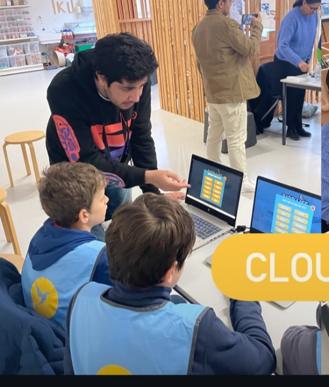

Aura
ngzeb
Aurangzeb is an international Teacher, Web Developer, and Graphic Designer.

Aurangzeb is an international Teacher, Web Developer, and Graphic Designer.
University of Peshawar, Pakistan - 2018-2022
University of PeshawarFocused on programming, web development, and software engineering fundamentals.
Thomas More Mechelan, Belgium - 2025-2026
Thomas More MechelanAdvanced studies in International Teaching with international exposure.
Various Projects - 2019-Present
Developed websites using HTML, CSS, JavaScript, React, PHP. Worked on updating and maintaining multiple websites.
Smart Education School Peshawar - 2024 (6 months)
Teaching computer science and web development, focusing on practical skills and innovative methods.
Freelance - 2018-Present
Creating visual content and designs for various projects.
Verified digital badges earned through Cisco training programs.
Learned computer hardware installation, troubleshooting, maintenance, and peripheral device configuration.
View Verified BadgeGained knowledge of operating system installation, file management, user accounts, and system troubleshooting.
View Verified BadgeMy approach to teaching focuses on engaging students, encouraging critical thinking, and creating a supportive learning environment.
I am impressed by Project-Based Learning, which comes from Constructivist theory (Piaget 🧠, Dewey). This approach encourages students to learn by doing, explore real-world problems 🌍, and think critically rather than just memorizing facts. I like this because it makes learning meaningful, motivates students to take ownership of their work, and allows them to discover solutions in a practical way.
Personally, I want to become a teacher 💻 who not only guides students but also helps them discover and develop their true potential 💎. I believe that students learn best through practical, hands-on experiences, not just theoretical lessons. While theory provides the foundation, applying concepts in real-life situations allows students to understand deeply 🧠, retain knowledge, and build confidence in their abilities.
For example, instead of only explaining a concept in class, I would include activities, experiments, or projects where students can practice and explore the idea themselves. I want my classroom to feel like a playground, where students can freely explore, experiment, and develop different skills while strengthening their learning. I believe that learning should be enjoyable and interactive, and that students should feel safe to ask questions, make mistakes, and learn from them.
Curiosity, collaboration 👥, and creativity are central to my teaching philosophy. I aim to design lessons that encourage students to think critically, work together, and take ownership of their learning.
Additionally, I see the role of a teacher as both a guide 🧭 and a mentor. Beyond academic knowledge, I want to support the social and emotional growth of my students, helping them build confidence, empathy, and resilience. My goal is to create an environment where students are motivated to learn, confident to explore new ideas 💡, and inspired to reach their full potential both academically and personally.

Students taught

Websites built

Projects delivered

Workshops delivered
Update 2: My Teaching Practice - Assessment, Goals, and Evidence
I use simple and practical methods to check student understanding:
My experience: During my long internship and short internship, I taught students about online safety and learnig through games. I explained how to avoid phishing links, fake emails, and also introduced deepfake content. I used real-life examples so students could understand easily. I also asked questions during the lesson to check their understanding.
I want to improve my teaching step by step and become more effective.
Short-term goals:
Long-term goals:
My plan: Learn new teaching skills, practice regularly, and reflect on my lessons and improve.
My experience: I have a background in computer science, so I want to use technology in teaching. For example, I can create simple games or small learning websites to support students.
I collect different types of evidence to show my teaching work:
My experience: During my internships, I taught topics like games based learning, online safety, phishing, and deepfakes. I can include lesson materials and student responses as evidence. I also have experience in web development and Arduino projects, which support my teaching.
Update 3: Short Internship - Long Internship, EAL, Microteaching
In my short internship, our topic was clouds and how they affect birds and airplanes. I made a simple bird life simulator app. This app helped students understand how clouds affect bird flight.
On the project day, I taught students about clouds and their effects. Students played the game and learned well. Some students were not active at first. I asked them simple quiz questions about clouds to get their attention. This helped them join the activity.
From this experience, I learned how to engage students. I understood that all students are different. Some students need more support. In the future, I want to use more games and questions to involve all students.
Long Internship (Online Safety Project)
In my long internship, our topic was online safety. I taught students how to stay safe online. I explained phishing and how to avoid fake emails and links. I also showed them how to protect their personal information.
I improved my communication skills because I explained difficult ideas in a simple way.
From this experience, I understood that online safety is very important for students. In the future, I want to use more real examples and activities to help students understand better.
In my teaching, I use reflection to improve myself. After each lesson, I think about what went well and what I can do better. This helps me learn from my experience. I also watch how students respond in class. If students are not active or do not understand, I try a different method next time. For example, I use simple questions, quizzes, or games to make lessons more interesting. I also take feedback from teachers or classmates. Their feedback helps me understand my mistakes and improve. From this, I learned that reflection is very important for a teacher. It helps me improve step by step. In the future, I will continue to reflect after every lesson to become a better teacher.
In my microteaching, I prepared a lesson called “Digital Healing & Youth Feelings” using Mentimeter. My idea came from a visit to the Kazerne Dossin Memorial Museum, which showed how political decisions can affect people’s emotions. The lesson was for secondary students (ages 12–18). Students used Mentimeter on their phones to answer one question about how political decisions make young people feel. The answers were shown in a word cloud. Then we discussed the common feelings in class. I learned that digital tools make lessons more interesting and help students share their thoughts easily. I also learned that students are more active when they feel safe to express their ideas. In the future, I want to improve my timing and give clearer instructions. I also want to use more digital tools in my teaching.
In my class, there are students from different cultures. This helped me understand different ways of thinking, learning, and behaving. I learned that students may communicate in different ways because of their culture. I always tried to respect all students and listen to their ideas carefully. This experience taught me the importance of respect, patience, and understanding in the classroom. I also learned that a teacher should include all students and make everyone feel welcome. In the future, I want to create an inclusive classroom where all cultures are respected and every student feels safe and valued.
In my class, most students have English as an additional language. They sometimes find it difficult to understand lessons or express their ideas. I tried to use simple English, short sentences, and clear explanations. I also used examples and questions to help them understand better. This helped students feel more comfortable and involved in the lesson. I learned that a teacher should be patient and support all learners. In the future, I want to use more visuals, simple instructions, and activities to help EAL students learn better..
I explored the Canadian curriculum because it is known for its focus on creativity, inclusion, and life skills. It encourages students to learn by doing projects, teamwork, and problem-solving. Teachers give students choices so they can learn in different ways and feel motivated. In Canada, education includes both academic subjects and real-life skills. For example, students create digital presentations, use technology in class, and work in groups. This helps them build 21st-century skills such as critical thinking, communication, and collaboration. As a future IT teacher, I want to use this idea in my classroom by giving students hands-on projects like making small apps or websites. I also want to make my lessons inclusive so that every student feels supported and confident.
I explored online learning resources and webinars related to digital education. These sessions showed how teachers can use technology to make learning more creative and student-centered. I learned that students become more active when lessons include interactive activities and digital tools. This experience helped me understand the role of technology in modern classrooms. In the future, I want to create engaging lessons that combine technology with active learning methods.
References:I participated in an iLab/Fab-Lab workshop where we learned creative and practical activities. During the workshop, we designed logos using digital tools and printed them on paper. After that, we drew the designs on T-shirts and bags for students. This activity helped us learn through hands-on work and teamwork. From this workshop, I learned creativity, communication, and teamwork skills. I also understood that practical activities help students stay active and enjoy learning. In the future, I want to use more project-based and creative activities in my classroom.
I completed basic Cisco training in computer hardware and operating systems. In this training, I learned about computer parts, hardware functions, and basic operating system skills. I also learned simple installation and system management. This training improved my technical knowledge and confidence in using technology. It also helped me understand how computers work, which is important for digital teaching and learning. In the future, I want to continue improving my IT and educational technology skills.
References:watched educational TED Talks and YouTube videos about teaching, motivation, and student learning. These videos helped me understand how teachers can make lessons more interesting and interactive. I learned that students learn better when they feel engaged and comfortable in the classroom. These resources also gave me ideas about creativity, communication, and student participation. In the future, I want to use more interactive activities and digital tools to improve learning.
References:I used different digital tools during my teaching practice, such as Mentimeter, CodePen, and VS Code. Mentimeter helped me make lessons interactive because students could answer questions using their phones and see results instantly. I used CodePen to show simple coding examples in HTML, CSS, and JavaScript with live results. I also used VS Code to prepare and practice programming examples. From this experience, I learned that digital tools make learning more i nteractive and easier to understand. Students become more active when they can participate and practice in real time. In the future, I want to explore more educational technologies to support student-centered learning.
Refrences:Update 5: Sports, Books, Volunteering, Museum visits, Movies/Documentaries,
I visited the Kazerne Dossin Memorial during my studies. The museum explained the history of discrimination, human rights, and the impact of political decisions on people’s lives. This visit helped me understand the importance of empathy, equality, and respect in society. The visit also inspired my microteaching lesson, “Digital Healing & Youth Feelings using mentimeter.” I learned that education is not only about academic learning but also about helping students understand emotions, history, and social responsibility. In the future, I want to create lessons that encourage students to think critically and respectfully.
References:I watched educational movies and documentaries related to teaching, motivation, and student learning. Movies such as 3-Idiots, Taare Zameen Par (Star on the Earth), and Freedom Writers helped me understand the importance of creativity, inclusion, and supportive teaching methods. These movies showed how teachers can positively influence students through encouragement, communication, and practical learning. I learned that education is not only about grades but also about helping students build confidence and critical thinking skills. In the future, I want to create a positive and student-friendly learning environment.
References:I regularly read books and online articles related to education, technology, and personal development. Reading helps me learn new ideas, improve my communication skills, and understand modern teaching methods. I especially enjoy reading about student motivation, digital learning, and classroom engagement. I also explored articles about creativity and growth mindset in education. These resources helped me understand that students learn in different ways and teachers should use flexible and supportive teaching methods. Reading educational content also improved my reflective thinking and helped me develop new ideas for my teaching practice.
References:I participated in sports such cricket with my friendsand physical activities during my studies. Sports helped me improve teamwork, discipline, patience, and time management skills. I also learned the importance of cooperation and staying active for both physical and mental health. From this experience, I understood that sports can help students build confidence and social skills. In the future, I want to encourage students to participate in healthy and active activities alongside their academic learning.
I participated in volunteering activities where I helped students learn basic computer and coding skills in Pakistan. I taught students basic computer hardware, including computer parts and their functions. I also taught some students coding online and explained simple web development concepts such as HTML, CSS, and basic programming. This experience improved my communication, patience, and teaching skills. I learned that students understand better when lessons are explained in a simple and practical way. Teaching students online also helped me improve my confidence and ability to support learners from different backgrounds.
“The lesson about online safety was very helpful. I learned how to identify phishing links and fake emails. Now I feel more confident using the internet safely.”

Class Participant
“The teacher explained difficult topics like phishing in a very simple way. The real-life examples made it easy to understand and interesting.”
long internship day
“I did not know about online scams before. After this lesson, I can recognize unsafe links and protect my personal information.”
Long Internship Day
“He is a good and dedicated teacher with strong knowledge of both teaching and coding. He explains topics in a very simple and clear way, which helps students understand easily. His experience in IT and programming makes his lessons more practical and engaging for students.”
Group Member